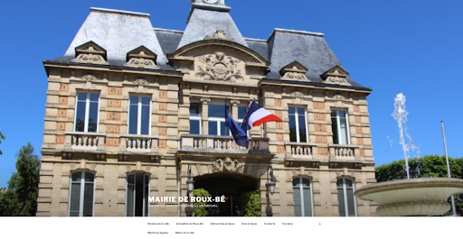

Site pour une mairie
Description du projet
Le site mairie est un projet qui a été réaliser sur WordPress par groupe de 2.
Le déroulement du projet
-Réalisation de recherches sur d'autres site de mairie
-Découverte de WordPress
-Création du site
-Réalisation d'une documentation utilisateurs

Compétences mise en oeuvres :
-Répondre aux incidents et aux demandes d'assistance et d'évolution
-Développer la présence en ligne de l’organisation
-Travailler en mode projet
-Mettre à disposition des utilisateurs un service informatique
Liens utiles :
- documentation